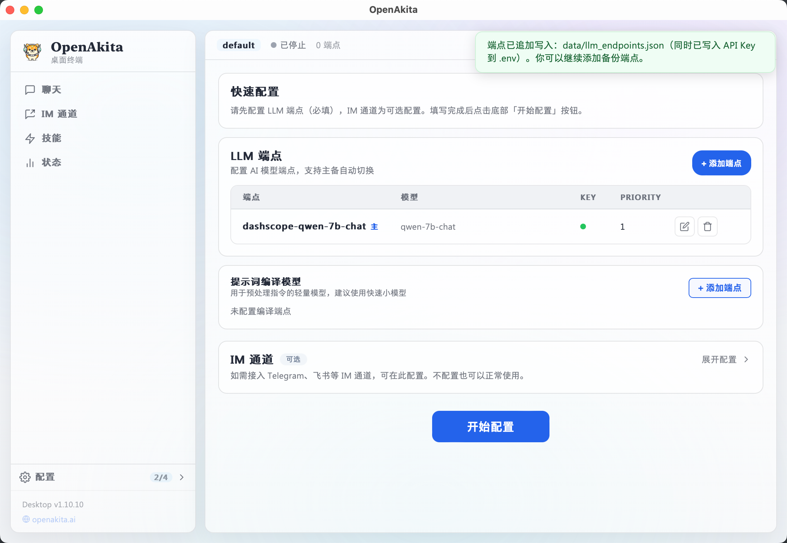
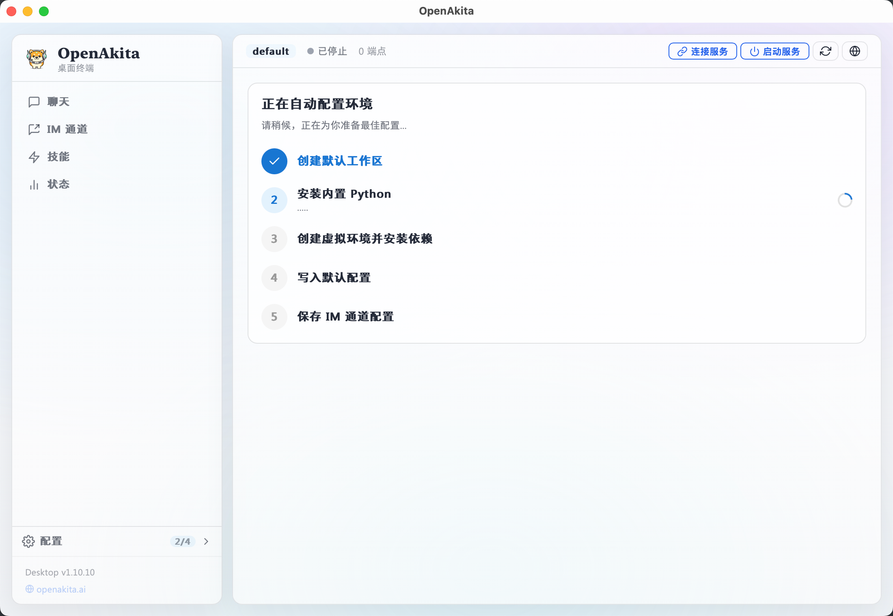
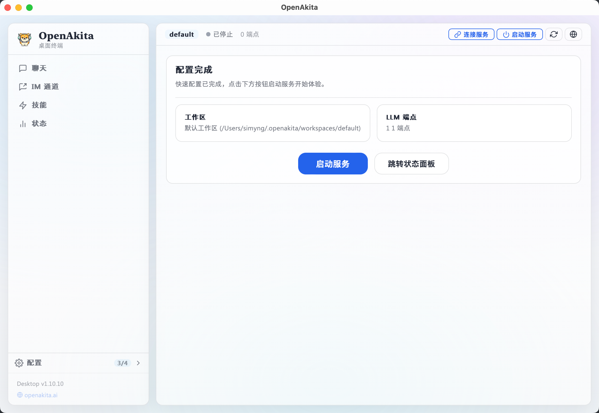
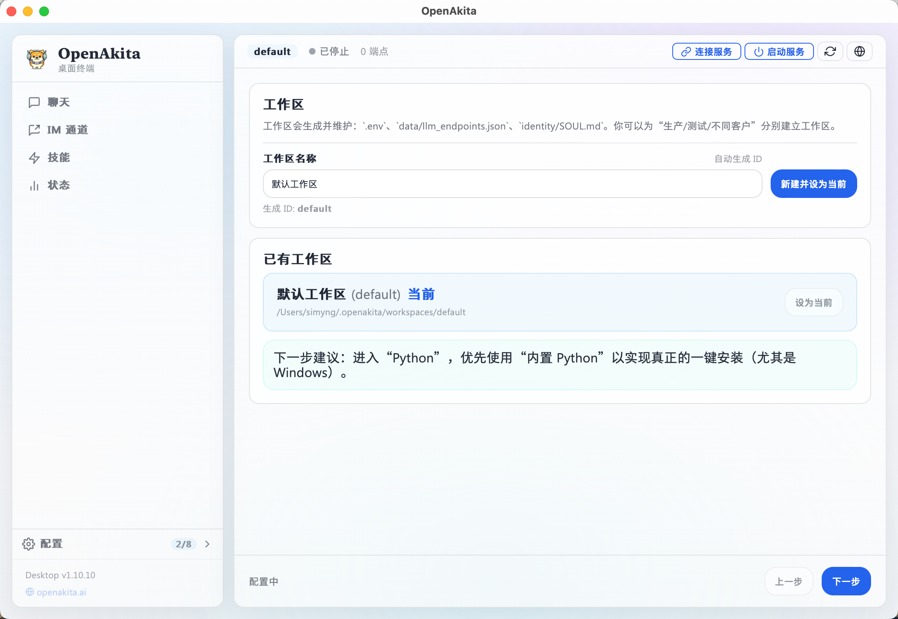
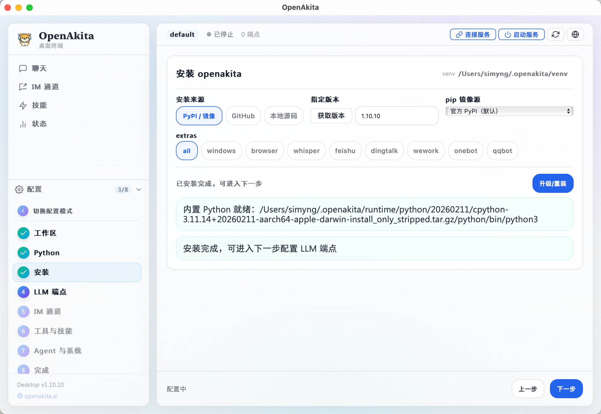
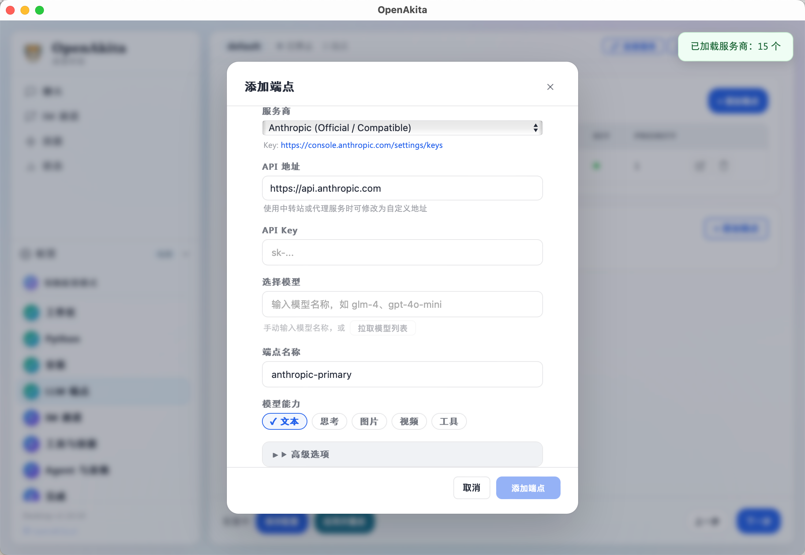
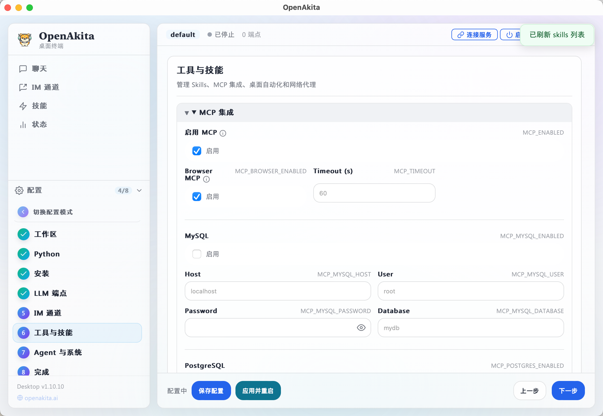

1
确认环境条件
检查系统、网络和可用 LLM API 端点。
把安装方式拆开看更清晰：先看总览，再按你的场景进入 Desktop / PyPI / 源码子教程。
推荐路径：先确认运行环境，再选择安装方式，完成后做一次启动验证。
检查系统、网络和可用 LLM API 端点。
Desktop 适合可视化引导，PyPI 适合脚本化，源码适合二开。
按对应子教程完成安装和配置。
验证交互模式、服务模式和一次任务运行。
| 项目 | 要求 | 说明 |
|---|---|---|
| 操作系统 | Windows 10/11（x86_64）、macOS 12+、Linux（x86_64） | 首次启动会进入配置向导 |
| 磁盘空间 | 至少 2 GB 可用空间 | 用于运行时和依赖安装 |
| 网络 | 可访问 Python 依赖源和 LLM 服务 | 首次配置需联网 |
| LLM API | 至少 1 个可用端点 | 快速配置必须先添加端点 |
三种安装方式适用于不同场景。建议先选一种跑通，再按需要切换。
推荐顺序：首次使用优先 Desktop，生产脚本优先 PyPI，研发团队优先源码。
安装完成后，建议按以下顺序做最小验证：
# 交互模式
openakita
# 服务模式（仅 IM）
openakita serve
# 单次任务测试
openakita run "创建一个带测试的 Python 计算器"安装完成后，双击打开 OpenAkita 桌面客户端。首次启动时会自动进入配置向导。

首次进入配置向导，你将看到模式选择页面，提供两种配置方式：
| 模式 | 时间 | 适合人群 | 说明 |
|---|---|---|---|
| 快速配置 | ~3 分钟 | 新手用户、快速体验 | 自动完成环境搭建，只需配置 LLM 端点 |
| 完整配置 | ~10 分钟 | 高级用户、需自定义 | 逐步配置所有选项，完全掌控每个细节 |
快速配置会自动完成：创建默认工作区、安装内置 Python 3.11、创建虚拟环境并安装依赖、写入推荐默认配置。你只需填写 LLM 端点（必填）和 IM 通道（可选）。

你至少需要添加 1 个 LLM 端点 才能开始使用。点击「+ 添加端点」按钮打开端点配置对话框：

| 字段 | 说明 | 示例 |
|---|---|---|
| 服务商 | 选择 LLM 服务提供商 | 通义千问、OpenAI、Anthropic 等 |
| Base URL | API 接口地址（选择服务商后自动填充） | https://dashscope.aliyuncs.com/compatible-mode/v1 |
| API Key | 你的 API 密钥 | sk-xxxxx |
| 模型 | 选择或输入模型名称（支持在线拉取模型列表） | qwen-max、gpt-4o |
| 端点名称 | 自动生成，也可自定义 | dashscope-qwen-max |
| 能力标签 | 勾选该模型支持的能力 | text、thinking、vision、tools |
高级选项（点击展开）：
openai（默认）或 anthropic.env 中存储的变量名添加成功后，端点会出现在列表中：

不配置 IM 通道也可正常使用桌面对话。需要接入时再展开 IM 区域填写参数。

| 通道 | 接入方式 | 需要公网 IP | 主要配置项 |
|---|---|---|---|
| Telegram | Long Polling | 否 | Bot Token、代理地址 |
| 飞书 | 自建应用 | 否 | App ID、App Secret |
| 企业微信 | 智能机器人 | 是 | Corp ID、Token、AES Key |
| 钉钉 | 企业内部应用 | 否 | Client ID、Client Secret |
| QQ（OneBot） | OneBot 协议 | 否 | OneBot WebSocket URL |
填写完所有必要信息后，点击页面底部的 「开始配置」 按钮。

如果尚未添加任何 LLM 端点，按钮会处于禁用状态，并提示「请先添加至少 1 个 LLM 端点」。
点击「开始配置」后，系统将自动执行以下步骤：

| 步骤 | 说明 | 预计耗时 |
|---|---|---|
| 1. 创建默认工作区 | 在 ~/.openakita/workspaces/default 下创建工作区目录 | < 1 秒 |
| 2. 安装内置 Python | 下载并安装 Python 3.11 嵌入版 | 10~30 秒 |
| 3. 创建虚拟环境并安装依赖 | 创建 venv，pip install openakita[all] | 1~3 分钟 |
| 4. 写入默认配置 | 将推荐配置写入工作区 .env 文件 | < 1 秒 |
| 5. 保存 IM 通道配置 | 将你填写的 IM 配置保存到 .env | < 1 秒 |
注意：此过程中请保持网络畅通。如果安装失败，可以点击「返回模式选择」切换到完整配置模式手动排查。
自动配置完成后，你将看到配置摘要页面：

页面显示以下信息：
你可以选择：
恭喜！快速配置已完成，你现在可以开始使用 OpenAkita 了。
完整配置提供对每个环节的精细控制，适合需要自定义环境、调整参数的高级用户。
工作区是 OpenAkita 的配置隔离单元。每个工作区独立维护以下文件：
.env — 环境变量配置data/llm_endpoints.json — LLM 端点列表identity/SOUL.md — 角色灵魂文件
操作说明：
| 操作 | 说明 |
|---|---|
| 新建工作区 | 输入工作区名称（如「生产」「测试」），系统自动生成 ID 并创建 |
| 设为当前 | 从已有工作区列表中选择一个设为当前活跃工作区 |
提示：首次使用建议直接创建一个「默认」工作区即可。多工作区适合需要区分生产/测试/不同客户环境的场景。
OpenAkita 需要 Python 3.11+ 运行环境。你有两种选择：

点击 「安装内置 Python」 按钮，系统将自动下载并安装 Python 3.11 嵌入版到 ~/.openakita/runtime/ 目录。
如果你已经安装了 Python 3.11+，点击 「检测系统 Python」，系统会扫描可用的 Python 安装：
python3、python 命令注意：请确保选择的 Python 版本 ≥ 3.11，低版本可能导致兼容性问题。
在此步骤中完成虚拟环境创建和 OpenAkita 包安装。

| 来源 | 说明 | 适用场景 |
|---|---|---|
| PyPI（默认） | 从 Python 官方包仓库安装 | 正式版本，推荐大多数用户 |
| GitHub | 从 GitHub 仓库安装最新代码 | 需要最新功能或开发版本 |
| 本地 | 从本地目录安装 | 开发者本地调试 |
| 镜像 | 地址 | 说明 |
|---|---|---|
| 官方 | https://pypi.org/simple | 默认，海外服务器 |
| 清华 | https://pypi.tuna.tsinghua.edu.cn/simple | 国内推荐 |
| 阿里云 | https://mirrors.aliyun.com/pypi/simple | 国内备选 |
| 自定义 | 用户指定 | 企业内网等场景 |
| 组件 | 说明 |
|---|---|
all | 安装所有可选组件（推荐） |
windows | Windows 桌面自动化支持 |
browser | 浏览器自动化（Playwright） |
whisper | 语音识别（Whisper） |
feishu | 飞书 IM 接入 |
dingtalk | 钉钉 IM 接入 |
wework | 企业微信 IM 接入 |
qq | QQ（OneBot）IM 接入 |
安装过程中会显示实时日志和进度条：

LLM 端点是 OpenAkita 调用大语言模型的入口。你可以配置多个端点，系统会根据优先级和可用性自动选择。

点击 「+ 添加端点」 打开配置对话框：

基本配置：
| 字段 | 必填 | 说明 |
|---|---|---|
| 服务商 | 是 | 选择预置服务商，或选「自定义」手动填写 |
| Base URL | 是 | API 接口地址，选择服务商后自动填充 |
| API Key | 是 | 你的 API 密钥，输入后自动存入 .env |
| 模型 | 是 | 选择或手动输入模型 ID |
| 端点名称 | 是 | 自动生成（格式：{provider}-{model}），可修改 |
| 能力标签 | 否 | text / thinking / vision / video / tools |
高级配置（点击展开）：
| 字段 | 默认值 | 说明 |
|---|---|---|
| API Type | openai | 接口类型，openai 或 anthropic |
| Key 环境变量名 | 自动生成 | API Key 在 .env 中的变量名 |
| 优先级 | 0 | 数值越小优先级越高 |
国内服务商：
| 服务商 | API 类型 | 默认 Base URL |
|---|---|---|
| 通义千问（DashScope） | openai | https://dashscope.aliyuncs.com/compatible-mode/v1 |
| 智谱 AI | openai | https://open.bigmodel.cn/api/paas/v4 |
| 百度千帆 | openai | https://qianfan.baidubce.com/v2 |
| DeepSeek | openai | https://api.deepseek.com/v1 |
| 月之暗面（Kimi） | openai | https://api.moonshot.cn/v1 |
| 零一万物 | openai | https://api.lingyiwanwu.com/v1 |
| 字节豆包（火山引擎） | openai | https://ark.cn-beijing.volces.com/api/v3 |
| SiliconFlow | openai | https://api.siliconflow.cn/v1 |
国际服务商：
| 服务商 | API 类型 | 默认 Base URL |
|---|---|---|
| OpenAI | openai | https://api.openai.com/v1 |
| Anthropic | anthropic | https://api.anthropic.com |
| Google Gemini | openai | https://generativelanguage.googleapis.com/v1beta/openai |
| Groq | openai | https://api.groq.com/openai/v1 |
| Mistral | openai | https://api.mistral.ai/v1 |
| OpenRouter | openai | https://openrouter.ai/api/v1 |
OpenAkita 支持配置多个端点，提供自动故障转移能力：
建议：至少配置 2 个端点（不同服务商），以确保高可用性。
编译器端点用于代码编译、格式化等辅助任务。如果不配置，系统会使用主端点。
IM 通道让你可以通过即时通讯工具与 OpenAkita 对话。所有通道均为可选配置。

| 字段 | 说明 |
|---|---|
| 启用 | 勾选以启用 Telegram 通道 |
| Bot Token | 从 @BotFather 获取的 Bot Token |
| 代理 | HTTP 代理地址（国内用户通常需要），如 http://127.0.0.1:7890 |
| 配对验证 | 是否要求用户输入配对码才能使用 |
| 配对码 | 自定义的配对验证码 |
| Webhook URL | 使用 Webhook 模式时填写，留空则使用 Long Polling |
接入方式：Long Polling（默认），无需公网 IP。
| 字段 | 说明 |
|---|---|
| 启用 | 勾选以启用飞书通道 |
| App ID | 飞书开放平台自建应用的 App ID |
| App Secret | 飞书开放平台自建应用的 App Secret |
接入方式：自建应用，无需公网 IP。在飞书开放平台创建应用并获取凭证。
| 字段 | 说明 |
|---|---|
| 启用 | 勾选以启用企业微信通道 |
| Corp ID | 企业微信的企业 ID |
| Callback Token | 回调配置中的 Token |
| EncodingAESKey | 回调配置中的 EncodingAESKey |
| Callback Port | 回调监听端口（默认 9880） |
接入方式：智能机器人，需要公网 IP。回调地址格式：http://your-domain:9880/callback
| 字段 | 说明 |
|---|---|
| 启用 | 勾选以启用钉钉通道 |
| Client ID | 钉钉开放平台企业内部应用的 Client ID |
| Client Secret | 钉钉开放平台企业内部应用的 Client Secret |
接入方式：企业内部应用，无需公网 IP。在钉钉开放平台创建应用。
| 字段 | 说明 |
|---|---|
| 启用 | 勾选以启用 QQ 通道 |
| OneBot WebSocket URL | OneBot 11 协议的 WebSocket 地址，如 ws://127.0.0.1:8080 |
接入方式：OneBot 11 协议，需要先部署 OneBot 实现端（如 go-cqhttp、NapCat 等）。
此步骤配置 OpenAkita 可以使用的工具和技能扩展。

MCP（Model Context Protocol）允许 OpenAkita 通过标准化协议调用外部工具。
| 配置项 | 默认值 | 说明 |
|---|---|---|
| MCP 总开关 | 开启 | 是否启用 MCP 工具 |
| 浏览器工具 | 开启 | Playwright 浏览器自动化 |
| 超时 | 60 秒 | MCP 工具调用超时时间 |
数据库工具（可选）：
| 配置项 | 说明 |
|---|---|
| MySQL | 启用后配置 Host、User、Password、Database |
| PostgreSQL | 启用后配置连接 URL |
桌面自动化让 OpenAkita 可以操作你的电脑桌面（截图、点击、输入等）。
| 配置项 | 默认值 | 说明 |
|---|---|---|
| 桌面自动化 | 开启 | 总开关 |
| 默认显示器 | 0 | 多显示器时指定主屏幕 |
| 最大宽度 | 1920 | 截图最大宽度 |
| 最大高度 | 1080 | 截图最大高度 |
高级选项：
| 配置项 | 默认值 | 说明 |
|---|---|---|
| 压缩质量 | 85 | 截图 JPEG 质量 |
| 视觉识别 | 开启 | 使用视觉模型辅助桌面操作 |
| 视觉模型 | qwen3-vl-plus | 视觉识别使用的模型 |
| OCR 模型 | qwen-vl-ocr | OCR 使用的模型 |
| 点击延迟 | 0.1 秒 | 每次点击后的等待时间 |
| 输入间隔 | 0.03 秒 | 逐字输入的间隔 |
| 配置项 | 默认值 | 说明 |
|---|---|---|
| 模型下载源 | auto | auto / hf-mirror / modelscope / huggingface |
| Whisper 语言 | zh | 语音识别语言：zh / en / auto |
| Whisper 模型 | base | 语音识别模型大小：tiny / base / small / medium / large |
| GitHub Token | 空 | 用于 GitHub 相关工具的个人访问令牌 |
| 配置项 | 说明 |
|---|---|
| HTTP_PROXY | HTTP 代理地址 |
| HTTPS_PROXY | HTTPS 代理地址 |
| ALL_PROXY | SOCKS 代理地址 |
| FORCE_IPV4 | 是否强制使用 IPv4 |

Skills 是可插拔的技能扩展。包括：
此步骤配置 Agent 行为、角色人格、记忆系统和调度器等核心参数。

OpenAkita 内置多种预设角色人格：
| 角色 | 风格 | 适用场景 |
|---|---|---|
| 默认助手 | 专业友好、平衡得体 | 日常使用，万能型 |
| 商务顾问 | 正式专业、数据驱动 | 工作场景，正式汇报 |
| 技术专家 | 简洁精准、代码导向 | 编程开发，技术问答 |
| 私人管家 | 周到细致、礼貌正式 | 生活服务，日程安排 |
| 虚拟女友 | 温柔体贴、情感丰富 | 情感陪伴，倾听关怀 |
| 虚拟男友 | 阳光开朗、幽默风趣 | 情感陪伴，轻松有趣 |
| 家人 | 亲切关怀、唠叨温暖 | 家庭场景，长辈式关怀 |
| 贾维斯 | 冷静睿智、英式幽默 | 科技极客，AI 管家 |
| 自定义 | 用户自定义角色 ID | 进阶用户，DIY 人格 |
| 配置项 | 默认值 | 说明 |
|---|---|---|
| Agent 名称 | OpenAkita | Agent 的显示名称 |
| 最大迭代次数 | 300 | 单次任务的最大执行步数 |
| 思考模式 | auto | auto（自动）/ always（总是）/ never（关闭） |
| 自动确认 | false | 是否跳过用户确认直接执行工具 |
活人感模式让 Agent 更像一个有温度的伙伴，会主动问候和关心用户。
| 配置项 | 默认值 | 说明 |
|---|---|---|
| 主动消息 | 开启 | 是否启用主动消息功能 |
| 表情包 | 开启 | 是否在对话中使用表情包 |
| 每日最大主动消息数 | 3 | 每天最多发送的主动消息数 |
| 安静时段开始 | 23 点 | 不发送主动消息的开始时间 |
| 安静时段结束 | 7 点 | 不发送主动消息的结束时间 |
| 配置项 | 默认值 | 说明 |
|---|---|---|
| 启用调度器 | 开启 | 定时任务调度功能 |
| 时区 | Asia/Shanghai | 调度器使用的时区 |
| 最大并发 | 5 | 最多同时执行的任务数 |
点击「高级设置」展开更多选项：

日志配置：
| 配置项 | 默认值 | 说明 |
|---|---|---|
| 日志级别 | INFO | DEBUG / INFO / WARNING / ERROR |
| 日志目录 | logs | 日志文件存储目录 |
| 数据库路径 | data/agent.db | SQLite 数据库路径 |
| 单文件大小 | 10 MB | 日志文件最大体积 |
| 备份数量 | 30 | 保留的日志备份数 |
| 保留天数 | 30 | 日志保留天数 |
| 控制台输出 | 开启 | 是否输出日志到控制台 |
| 文件输出 | 开启 | 是否写入日志文件 |
记忆与向量化：
| 配置项 | 默认值 | 说明 |
|---|---|---|
| 向量模型 | shibing624/text2vec-base-chinese | 文本向量化模型 |
| 计算设备 | cpu | cpu 或 cuda |
| 模型下载源 | auto | 模型下载镜像源 |
| 记忆保留天数 | 30 | 聊天记忆保留时间 |
| 最大历史文件 | 1000 | 历史文件数上限 |
| 最大存储 | 500 MB | 历史文件总大小上限 |
会话管理：
| 配置项 | 默认值 | 说明 |
|---|---|---|
| 会话超时 | 30 分钟 | 无活动后自动结束会话 |
| 最大历史 | 50 条 | 单个会话保留的消息数 |
| 存储路径 | data/sessions | 会话数据存储目录 |
主动消息高级：
| 配置项 | 默认值 | 说明 |
|---|---|---|
| 最小间隔 | 120 分钟 | 两次主动消息的最短间隔 |
| 空闲阈值 | 24 小时 | 多久没互动后触发主动消息 |
| 表情包目录 | data/sticker | 表情包数据存储路径 |
多 Agent 编排（实验性）：
| 配置项 | 默认值 | 说明 |
|---|---|---|
| 启用编排 | 关闭 | 多 Agent 协作模式 |
| 编排模式 | single | single / multi |
配置全部填写完毕后进入完成页面。

完成页面提供：
点击「启动服务」后，系统会自动跳转到状态面板，你可以在那里监控服务运行状态。
python -m venv venv
source venv/bin/activate
pip install openakita[all]
openakita init
openakitaopenakita
openakita serve
openakita run "创建一个带测试的 Python 计算器"git clone https://github.com/openakita/openakita.git
cd openakita
python -m venv venv
source venv/bin/activate
pip install --upgrade pip
pip install -e ".[all,dev]"
cp examples/.env.example .env
cp data/llm_endpoints.json.example data/llm_endpoints.json
openakita initopenakita 命令可执行。data/llm_endpoints.json 至少一个端点。.env 中至少一个有效 API Key。openakita
openakita serve
openakita run "创建一个带测试的 Python 计算器"